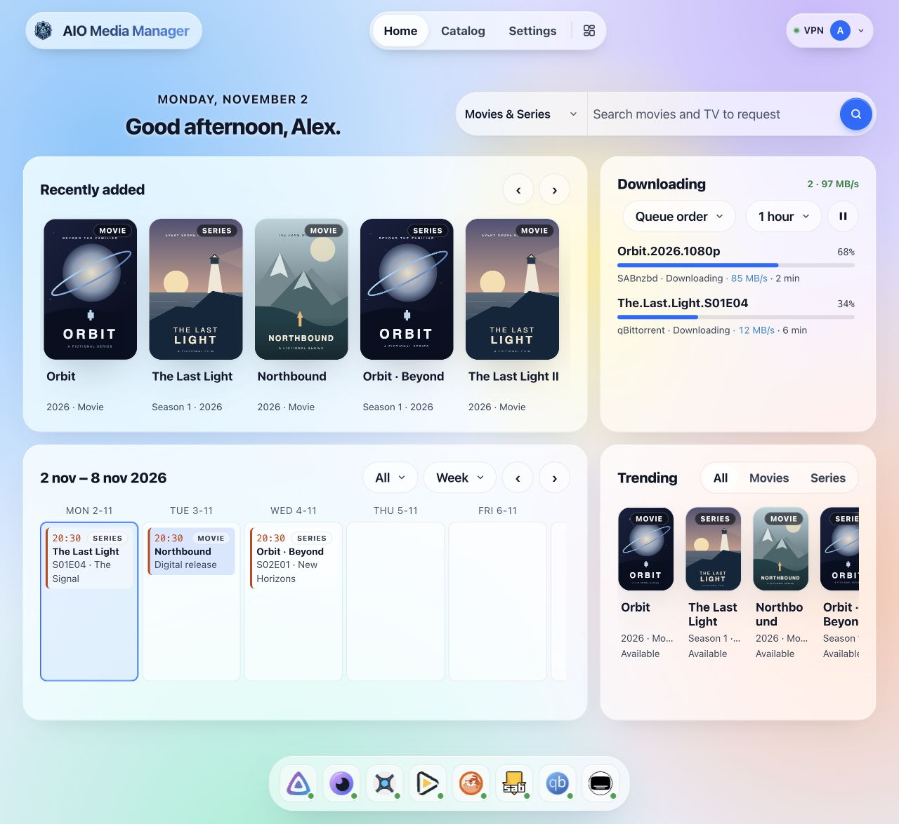
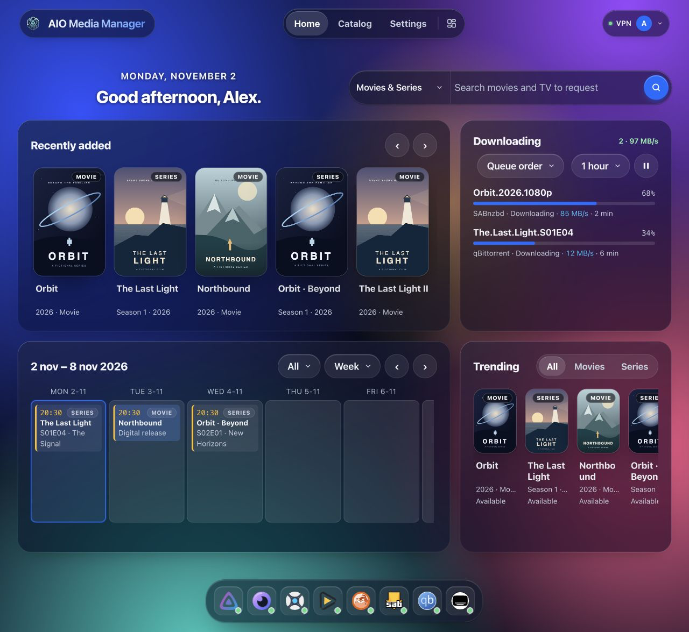

Using the dashboard — Advanced¶
Advanced
This is the technical reference. For a first installation, follow the beginner guide instead. Beginner guide.
This guide is for after AIO is installed and you can open the web UI.
Goal
Finish the wizard for the apps you need, use Home day to day, and use Open on Catalog whenever you want that tool’s screen.
Default address on your home network:
http://YOUR-SERVER-IP:8080
Replace the IP (and port, if you changed it).
First time¶
- Create the admin account when prompted (username, email, password).
- Finish the first-run wizard: the apps you want, a Usenet server if you use one, optional VPN, and an optional Cloudflare Tunnel. The wizard installs that selection. The tunnel and the VPN start as soon as it finishes, when you turned them on.
- After a container recreate, the dashboard answers while apps are still starting. With VPN on, qBittorrent, Prowlarr, and Flaresolverr wait until the WireGuard handshake is up (AIO retries the VPN if the first try fails). Cloudflare Tunnel starts last, after the apps answer, so cloudflared does not log connection refused against origins that are not listening yet.
- Wait until Catalog shows those apps as running. Use Open for anything that still has its own account (Plex, Jellyfin, NZBGet).
- Add more later from Catalog. You do not need every app.
Start small (for example Radarr + one download client + Jellyfin), then add the rest.
Header: Home, Catalog and Settings stay centered across the full header. On narrow screens they have their own centered row. The header scrolls with the page. On Home, the four-block layout button is on the right, beside your account. All app pages, controls and labels use Figtree; when that web font cannot load, the same system-font fallback is used throughout.
Arrange your Home widgets¶
This is a visual explanation of the real controls; the website demo uses sample data and simplified movement.
Click a widget while editing to open its size choices. The × removes it from the selected screen size; use Undo immediately if you removed the wrong one.
Changes save automatically to your AIO profile; Done closes editing. A separate phone/tablet/desktop layout means changing desktop does not always change your phone. The size buttons only appear when the window can preview those sizes.
Dashboard
For an empty card, first check its source app in Catalog. Settings → Help and diagnostics → Explain empty widgets can show why content is missing. Settings → Start page also controls the app dock; Settings → Language and appearance changes the look.
On a keyboard: Tab to a widget while editing; arrow keys move it, Shift + arrows resize, Enter opens size choices, and Delete removes it.
Home¶
Home is a grid. Phone, tablet, and desktop each keep their own layout (4, 8, and 12 columns). The layout control on the Home tab moves, resizes, adds, and removes widgets. Settings → Start page shows or hides the app dock and sets the sign-in message. Keys are under Settings → App connections.
| Widget | What it shows |
|---|---|
| Greeting | Time of day |
| Search | Seerr search |
| Calendar | Upcoming episodes and movies. A season that lands on one day is one entry |
| Downloading | Active downloads, with pause all / resume all. Stuck items can be removed |
| Recently added | New shows and movies. Scrolling loads further Jellyfin pages. Plex stays on its latest 20 |
| Requests | Seerr requests that are not finished, plus ones marked available or declined in the last 30 days |
| Trending | Seerr's trending list. Scrolling keeps loading |
| Now playing | Who is watching on Jellyfin or Plex, including direct play |
| Storage | Disk use for config, downloads, and media |
| Server | CPU, memory, and network. With host /sys mounted at /host/sys, this is the server's network cards. Without that mount it is only this container's traffic |
| Needs attention | The same checks as Settings → Notifications, with a link to fix each one |
| Other downloads | Off by default; add it from the layout control. What SABnzbd, NZBGet, and qBittorrent downloaded that is not a film or series (music, books, games, software, archives), each with an icon for its kind |
Install, start, stop, and Open live on Catalog. The dock at the bottom of Home opens apps that are already installed.
LAN Open usually looks like http://YOUR-SERVER-IP:8989 (example for Sonarr).
If you set up Cloudflare public hostnames, Open can instead use https://sonarr.yourdomain.com — see Cloudflare Tunnel.
What the wizard wires¶
After an app is healthy — or when you click Auto-Wire — AIO sets download folders and categories, root folders and download clients in Sonarr, Radarr, and Lidarr, Prowlarr sync, Seerr, Bazarr pairing, and starter configs for Recyclarr and NeutArr. Settings → Usenet holds the news server and sends it to SABnzbd and NZBGet. Public starter indexers are off by default. Enable them explicitly in the wizard or Settings → App connections, then run Auto-Wire to add them. Disabling the choice keeps existing indexers. Remove any you do not want; they are not added back.
SSD staging and an HDD library are supported; imports across them copy files. Hardlinks require the same filesystem.
Still yours to finish:
- A Plex account.
- NeutArr's first-run setup token (below), until that account exists.
- Signing in to Jellyfin and NZBGet. On the LAN, Open already signs in Sonarr, Radarr, Lidarr, Prowlarr, qBittorrent, SABnzbd, Bazarr, and Seerr as the manager admin. Public hostnames always show the app's own login.
- Seerr's admin and first-run wizard are completed for you from that shared login (through Jellyfin, or a claimed Plex).
VPN, Cloudflare Tunnel, Recyclarr, NeutArr, and backups are optional.
NeutArr first-run setup token¶
The first time NeutArr starts, before it has an account, it asks for a one-time setup token.
- Wait until NeutArr shows as running.
- Open Catalog → NeutArr → Settings.
- Copy First-run setup token and paste it into NeutArr's setup screen.
That value is the file /config/neutarr/.setup-token inside the appliance (the host folder mounted as /config). NeutArr deletes the file after the account is created, and the Settings field goes empty. Until NeutArr has started, the field stays empty.
Checks, progress and recovery¶
Before an install or manual update, AIO shows storage, maintenance and download-access checks. Resolve any blocking result before continuing. Catalog → Installation activity shows stages and opens live logs; close and reopen it as needed. If setup fails after installation, Try again retries starting and connecting the app.
In Settings → App connections, choose Check my installation to read back the actual configuration. Auto-Wire applies automatic configuration; the check itself changes no app settings. Public starter indexers require an explicit opt-in.
Settings → Backups supports encrypted HTTPS/WebDAV copies and safe restore tests in a temporary folder. Keep the encryption password outside the server. Settings → Notifications adds disk warning/recovery thresholds and recent incidents. Recyclarr app settings include Manual configuration to preserve edited YAML exactly.
See installation checks and recovery and sessions, HTTPS and emergency access.
Opening each app’s UI¶
| Situation | What to use |
|---|---|
| At home on Wi‑Fi | Open → http://IP:PORT |
| Away from home with Cloudflare | Open → https://subdomain.yourdomain.com |
| You changed an app’s listen port | AIO updates published routes; recreate the container if LAN links still look wrong. The manager port itself is compose/env (AMM_API_PORT), shown on Settings → Server and storage |
If Open fails:
- Is the app running on Catalog?
- Are you on the same network (for LAN links)?
- For HTTPS links: is the tunnel connected and was Publish successful? (Cloudflare guide)
Using the new catalog¶
Open Catalog at the top. The left sidebar helps you choose what to see; the apps appear on the right.
Click an app’s name, icon or row to open its app settings popup. This does not open the app itself. The ⋯ button offers Settings, Stop, Restart, Logs, Update and Uninstall as applicable. Close the popup with × or Escape. Only save changes when you intend to change that app.
Catalog app settings change one app. The Settings page in the top navigation changes AIO itself: profile, appearance, connections, backups and updates.
The settings page uses the same sidebar-and-content layout as the catalog. On a computer, choose a group and page on the left; the selected page appears on the right. The search field filters the menu, not the values of your settings. Scroll the sidebar to find lower groups. On a phone, open Settings sections and choose a page.
Settings you will actually use¶
Names in the UI may be short labels; here is what they mean in practice.
| Choose this page | What do you want to change? |
|---|---|
| Profile | Your account, photo and password. |
| Language and appearance | Language, theme, wallpaper and branding. |
| Start page | App dock and sign-in message; widget layout is edited on Home. |
| VPN | The VPN connection for supported apps. |
| External access | Cloudflare Tunnel, public hostnames and trusted proxies. |
| App connections | Jellyfin/Seerr keys, TV pairing and read-only Homey connections. |
| Usenet | Usenet provider details for SABnzbd and NZBGet. |
| Updates | App updates and schedules. AIO itself is updated through your NAS/Docker. |
| Backups | Create, check, schedule and restore configuration backups. |
| Notifications | Email and Discord alerts. |
| Server and storage | Timezone, logs, permissions and storage paths. Change mounts on the host. |
| Help and diagnostics | Explain empty widgets and collect diagnostic information. |
| About this app | Version, install on your device and project support. |
After changing important network or port settings, give apps a moment to reload — or restart AIO if links still look stale.
Screens¶
Current app interface with fictional example data. Light is on the left, dark on the right. The filled Home screen shows posters, downloads and episode/movie release dates. Screenshots use English interface labels.
Dashboard¶
| Light | Dark |
|---|---|
 |
 |
External access¶
| Light | Dark |
|---|---|
 |
 |
App connections¶
| Light | Dark |
|---|---|
 |
 |
About this app¶
| Light | Dark |
|---|---|
 |
 |
Profile¶
| Light | Dark |
|---|---|
 |
 |
Language and appearance¶
| Light | Dark |
|---|---|
 |
 |
Server and storage¶
| Light | Dark |
|---|---|
 |
 |
Updates¶
| Light | Dark |
|---|---|
 |
 |
Backups¶
| Light | Dark |
|---|---|
 |
 |
VPN¶
| Light | Dark |
|---|---|
 |
 |
Notifications¶
| Light | Dark |
|---|---|
 |
 |
Usenet¶
| Light | Dark |
|---|---|
 |
 |
Start page¶
| Light | Dark |
|---|---|
 |
 |
Help and diagnostics¶
| Light | Dark |
|---|---|
 |
 |
Catalog app settings¶
| Light | Dark |
|---|---|
 |
 |
Backups¶
- Use the built-in backup feature when you have a setup you like.
- Also back up the config folder on the host (and the backups mount if you use one).
- Media files are separate — back those up with your normal NAS/disk strategy.
Updating apps vs updating AIO¶
| What | How |
|---|---|
| AIO itself (dashboard + supervisor) | Pull a new Docker image and recreate the container (Install). Settings → Updates only tells you when :latest moved |
| Installed apps (Sonarr, Seerr, and the rest) | Settings → Updates. Update one app or all of them. Progress shows there, and Catalog and Home show Updating…. The dashboard keeps answering. Schedules default to off |
The image does not bump those apps on its own. Read release notes on GitHub if something major changed.
Common snags¶
| Problem | Try this |
|---|---|
| Blank or login loop on an app | Clear site data for that URL; confirm the app is running |
| NeutArr asks for a setup token | Catalog → NeutArr → Settings after NeutArr is running. The token is removed once the NeutArr account exists |
| Permission errors writing files | Host folder owner must match the container user (PUID/PGID) |
| Sonarr imports but duplicates files | Downloads and media must share one filesystem for hardlinks |
| Works at home, not on phone data | Need Tunnel (+ ideally Access); LAN IPs are not reachable from mobile data |
| Two Sonarrs fighting | Remove any extra Sonarr container; only AIO should run it |
| Server graph counts only this container | Mount host /sys read-only at /host/sys and recreate (Docker) |
| Jellyfin recently added looks short | Scroll the rail — it loads further pages. If the rail stays empty, set a Jellyfin API key under Settings → App connections |
| Plex recently added stops at 20 | That list is Plex's latest 20 |
| qBittorrent / Prowlarr / Flaresolverr stay stopped after boot | VPN is on without a live handshake. Check Settings → VPN; AIO retries the tunnel and starts those apps when it is up. A manual VPN Stop cancels the retry |
| Prowlarr indexers unavailable / RSS failures | Often a DNS timeout through the VPN. After updating AIO, recreate the container, then Test All in Prowlarr (and re-test in Sonarr/Radarr) so the old failure backoff clears. A debug share shows VPN DNS cache hits and per-resolver failures |
| cloudflared logs connection refused at boot | Expected on older images when the tunnel started before apps. Current images start Cloudflare last; recreate from a current nightly / latest |
Next steps¶
- New install checklist: Install
- Remote access: Cloudflare Tunnel
- Lock the door on public URLs: Cloudflare Access
Cleanuparr¶
Install Cleanuparr from Catalog or select it in the optional wizard apps. AIO manages it as a process on Linux amd64/arm64, with port 11011 and persistent configuration under /config/cleanuparr (or <AMM_CONFIG_DIR>/cleanuparr on native Linux). Existing Compose installations must add 11011:11011 and recreate the AIO container. The test and GPU overlays inherit this mapping.
Auto-Wire creates the AIO administrator in a fresh Cleanuparr installation and connects installed Sonarr, Radarr, Lidarr, qBittorrent and SABnzbd using their selected ports and credentials. NZBGet is not supported upstream. Repeated wiring updates the AIO-named connections and preserves other connections, disabled choices, cleanup rules and schedules. New setups start in dry-run before connections are added; AIO enables conservative Queue Cleaner and Malware Blocker checks in dry-run, but leaves completed-download cleanup and proactive searches off. Review the rules in Cleanuparr before allowing deletions, and avoid overlapping Seeker and NeutArr search schedules.
Open UI signs the shared administrator in on the same LAN host. Passwords and API keys remain server-side; transient login sessions are handed only to the opened Cleanuparr origin, without tokens in URLs. Public subdomains and accounts with 2FA keep their own sign-in. Authentication is never disabled. If Cleanuparr already uses a different account, complete its setup and save its API key in Catalog → Cleanuparr → Settings, then run Auto-Wire. AIO does not take over unrelated unfinished accounts.
Check connections reads the saved endpoints without changing them. Updates, backups, selective restore and uninstall use the standard app lifecycle; uninstall preserves configuration by default and never deletes media libraries. Port changes require the matching Docker host mapping. If you change the AIO administrator, run Auto-Wire to synchronize the Cleanuparr account.
Default profile for new installations¶
These are conservative AIO choices, based on the upstream documentation, not universal upstream recommendations. Defaults apply once when AIO creates the account; existing accounts and later operator changes are preserved. Failed setup retries verify saved values and do not duplicate the stall rule.
| Setting | AIO default | Reason |
|---|---|---|
| Dry-run | On | Review logs before allowing live changes |
| Internet connectivity check | On; HTTPS to GitHub and Cloudflare | Avoid queue strikes during an internet outage |
| TLS certificate validation | Enabled | Keep HTTPS verification |
| Queue Cleaner | Every 5 minutes | Regular checks with low overhead |
| Public stalled torrents | 12 strikes (roughly 1 hour), reset on progress | Allow temporary stalls; skip private torrents |
| Failed imports | 6 strikes (roughly 30 minutes), Include mode | Only replace specified release/content problems |
| Failed-import safety | Ignore private; skip missing client items; no force-import | Avoid removing downloads when the client is unavailable or bypassing import validation |
| Metadata / client-error / slow-download rules | Off | Avoid guessing acceptable speeds, tracker delays or disk failures |
| Malware Blocker | Every minute; official permissive blacklist for Sonarr/Radarr | Block known unwanted patterns while allowing archives; do not apply a video list to music |
| Malware deletion | Ignore private; do not delete a mixed torrent merely for one blocked file | Preserve tracker obligations and legitimate files |
| Download Cleaner | Off | Seeding ratios, orphaned files and deletion policies need individual choices |
| Seeker | Reactive replacements every 10 minutes; proactive searching off | Replace removed downloads without duplicating NeutArr's library searches |
Failed-import patterns: title mismatch, not found in the grabbed release, was unexpected considering, No files found are eligible for import, not imported or missing, Unable to parse. Temporary unpacking, disk-space and path-mapping errors are not included. The downloading-metadata rule is off because it is global rather than restricted by the public-only stall rule. No qBittorrent exclusions are changed outside Cleanuparr's dry-run control.
Sources: Queue Cleaner, Malware Blocker, General, Seeker. Verified API field compatibility against Cleanuparr v2.11.0; the live documentation can describe newer fields.
Donate
🤖 AI writes some code. I break it. We fix it together.
Can’t spare a few bucks? Drop a star on GitHub instead. It feeds the ego, and that’s almost as good.